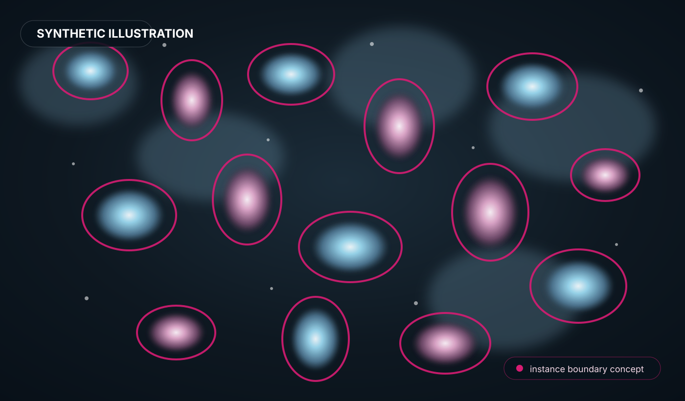

Nuclear instance segmentation and quantification
See the nuclei. Measure what matters.
BioNuclei is an automated analysis pipeline designed specifically for nuclear instance segmentation and quantification in fluorescence microscopy. AI predicts semantic regions; deterministic scientific software extracts individual nuclei, measurements and provenance.
ND2 / TIFFBoundary U-NetInspect results
The scientific workflow
One focused problem. One reproducible pipeline.
BioNuclei stays intentionally narrow: segment individual nuclei in fluorescence microscopy images, convert predictions into explicit instances, quantify them, and preserve the evidence needed to inspect the run.
BioNuclei workflow
Model, inference, deterministic instance extraction, measurements and provenance.
Explore the workflow → 02Analyses
Nuclear instances and quantitative measurements from supported fluorescence images.
View analyses → 03Formats
Supported Nikon ND2 and TIFF/TIF inputs with explicit acquisition handling.
View formats → 04Results
Segmentation masks, overlays, measurements and machine-readable provenance.
View results → 05Research
Training reference, evaluation, limitations and reproducibility records.
Read the research →Manual mode
Prefer to inspect the image yourself?
BioNuclei also provides a manual browser route through ImageJ.JS. Manual processing is separate from the automated BioNuclei inference path.
Open ImageJ.JS in the Lab →BioMCP connects agents to BioNuclei.
BioMCP is separate from BioNuclei's scientific scope. It provides an interoperability layer for exposing validated BioNuclei operations to compatible AI agents and MCP clients. BioNuclei remains the scientific source of truth.
Learn about BioMCP →Scientific boundary
AI predicts. Deterministic scientific software measures.
BioNuclei is not a clinical diagnostic tool, not an online continuous-learning system, and not a general-purpose whole-cell imaging suite. Every result should remain inspectable and traceable to its computational provenance.